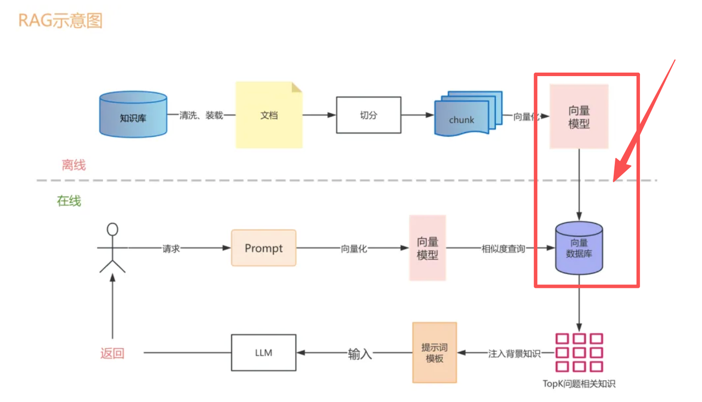
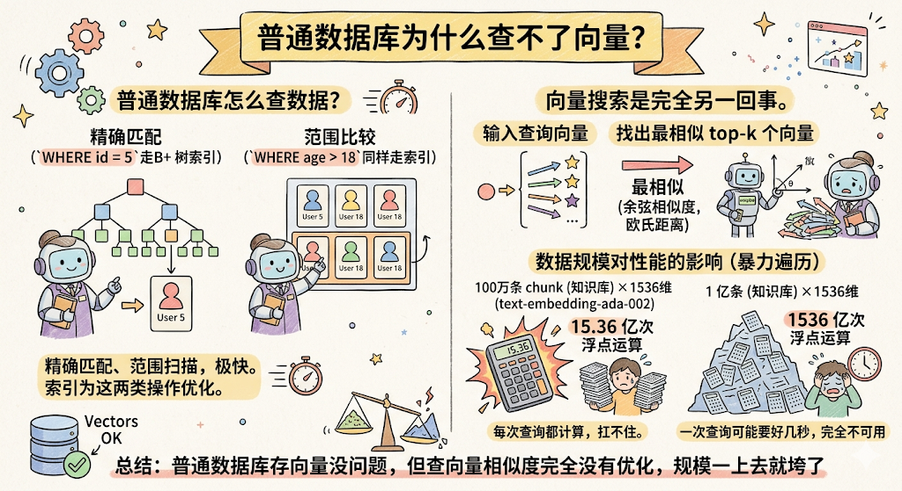
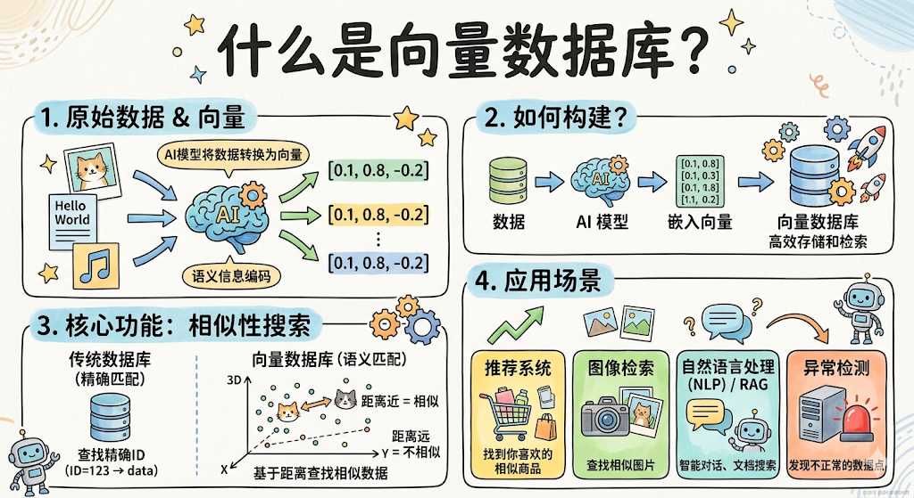
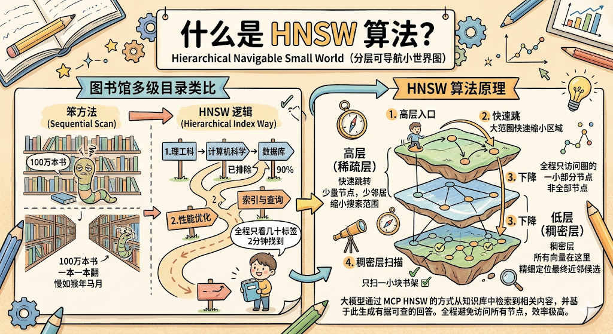

上一章 RAG 里，在介绍 RAG 工作阶段的时候，说把向量存进「向量数据库」，当时一带而过。

你可能当时就想问： 为什么要专门用向量数据库？MySQL 不能存吗？
这章就专门把这个问题讲清楚。
一、先别急，普通数据库能不能存向量？
能存，但有个很大的问题。
普通数据库存向量没问题，向量本质上就是一串浮点数，MySQL 建个字段存下来完全没难度。
难的是 查。
二、普通数据库为什么查不了向量？
咱们先聊聊 MySQL 是怎么查数据的。
你写 SELECT * FROM users WHERE id = 5 ，MySQL 走 B+ 树索引，几次跳转就找到了，极快。你写 WHERE age > 18 ，同样走索引，范围扫描，也很快。
MySQL 的索引本质上是为两类操作优化的： 精确匹配 和 范围比较。

但向量搜索是完全另一回事。
向量搜索要做的事情是： 给你一个向量，找出和它最相似的 top-k 个向量。
「最相似」意味着要算距离，余弦相似度、欧氏距离……这类计算，需要拿着你的查询向量，和库里每一条向量都算一遍距离，然后排序，取最小的几个。
MySQL 的 B+ 树索引完全帮不上这个忙。它压根不知道怎么在多维空间里找「最近邻」。
那就暴力遍历呗？
来感受一下规模：
OpenAI 的 text-embedding-ada-002 模型，每个 chunk 转化出来的向量是 1536 维。你的知识库有 100 万条 chunk，那么每次查询要算的浮点运算量是：
1536 维 × 100 万条 = 15.36 亿次浮点运算
这还只是算距离这一步。每次用户提问，都要触发一次这个计算量，普通数据库完全扛不住。
数据量涨到 1 亿条呢？1536 亿次浮点运算，一次查询可能要好几秒，完全不可用。
总结：普通数据库存向量没问题，但查向量相似度完全没有优化，规模一上去就垮了。
三、向量数据库是什么
向量数据库就是专门为解决这个问题设计的， 在海量向量中，毫秒级找到最相似的 top-k 条。

它存的东西和普通数据库差不多：向量 + 对应的原文（元数据）。但它有专门为向量搜索设计的索引结构，能把那个「15.36 亿次浮点运算」的暴力遍历，优化到几十毫秒甚至几毫秒完成。
关键问题就来了： 它怎么做到的？
四、向量数据库怎么做到「又快又准」
秘诀是 ANN（Approximate Nearest Neighbor，近似最近邻） 搜索。
注意这个词： 近似。
向量数据库并不保证找到绝对最相似的那几条，而是找到「差不多最相似的」几条，精度换速度。但在实际场景里，「差不多最相似的」和「绝对最相似的」效果几乎没有区别，因为语义检索本身就不需要那么精确。
那它用的什么算法？目前最主流的是 HNSW（Hierarchical Navigable Small World，分层可导航小世界图）。

名字很复杂，但原理用一个例子就能讲清楚。
图书馆的多级目录类比
你去一个大图书馆，想找一本叫《MySQL 索引优化》的书。
笨方法：从第一排书架的第一本书开始，一本一本翻，直到找到它。100 万本书的图书馆，你翻到猴年马月。
图书馆的实际做法：
-
第一步，看大类目录牌：理工科 → 计算机科学 → 数据库技术。三步跳转，你已经排除了 90% 的书架区域。
-
第二步，看中类目录：性能优化 → 索引与查询。再两步，进一步缩小范围。
-
第三步，直接在这一小块书架上找。扫几眼，拿到书。
整个过程不超过 2 分钟，而你总共只「看过」几十本书的标签，不是 100 万本。
HNSW 就是这个逻辑。
它把所有向量组织成一个多层的图结构：
-
高层（稀疏层）：只有少量「节点」，每个节点连接着几个「邻居」。高层负责大范围的快速跳转，帮你快速缩小搜索范围。
-
低层（稠密层）：所有向量都在这里，精细定位最终的近邻候选。
查询的时候，从高层入口进，快速跳转几步找到大致区域，然后下到低层精细扫描。全程只需要访问整个图的一小部分节点，而不是所有节点。
结果： 牺牲极少量精度（通常 95%+ 的召回率），换来 100 倍以上的速度提升。100 万条向量，几毫秒搞定。
五、主流向量数据库介绍
市面上向量数据库已经有不少选择了，咱们介绍五个最常见的。
Chroma
本地轻量级向量数据库，Python 原生 API，几行代码就能跑起来，不需要任何部署配置。
适合干什么： 本地开发、功能验证、快速上手原型。你想跑通 RAG 的完整流程，Chroma 是最低摩擦的选择，装个 pip 包直接用。
缺点：不适合生产环境，没有高可用、分布式这些特性。
Pinecone
全托管的云向量数据库，你不需要管任何基础设施，服务器、扩容、备份全都是 Pinecone 的事，你只需要调 API。
适合干什么： 快速上线，不想自己运维。创业公司、小团队，想把 RAG 功能上生产但没有专职 DBA，Pinecone 是最快的路径。
缺点：数据放在第三方，有数据合规顾虑的场景不适合；按用量收费，规模大了成本不低。
Milvus
开源的生产级向量数据库，功能最全，支持多种索引类型、分布式部署、数据持久化。背后是 Zilliz 公司（国产）维护，社区活跃，文档完善。
适合干什么： 私有化部署的生产环境。数据不能出内网、需要精细控制、规模较大的场景，Milvus 是目前开源里功能最完整的选择。
缺点：部署和运维有一定复杂度，学习曲线比 Chroma 陡。
Weaviate
开源向量数据库，特色是内置了 Embedding 集成，你可以直接把原始文本丢进去，Weaviate 自动帮你调 Embedding 模型转向量，不用自己处理这一步。同时支持图片、音频等多模态数据。
适合干什么： 需要多模态搜索、或者想简化 Embedding 步骤 的场景。
Qdrant
Rust 实现的高性能向量数据库，内存占用低，查询速度快，适合资源受限或高并发场景。接口设计简洁，HTTP/gRPC 都支持。
适合干什么： 对性能和资源消耗敏感 的生产环境，比如在有限硬件上跑大规模向量检索。
六、怎么选？
讲了五个，选哪个？给你一个明确的决策树，不说「看情况」：
学习 / 跑原型 → 用 Chroma
零配置，pip 安装，几行代码跑通完整 RAG 流程。你现在就在学 RAG，直接用 Chroma，不要想太多。
生产环境，不想管运维 → 用 Pinecone
不想操心服务器、扩容、备份这些事，数据放云上也没问题，Pinecone 拿起来就用。
生产环境，需要私有化部署 → 用 Milvus 或 Qdrant
数据必须在自己服务器上，选这两个。团队有运维能力、需要最全功能选 Milvus；对性能和资源敏感、希望部署简单点选 Qdrant。
用厨房来类比这四个选择：
-
Chroma：家用厨房。够用，方便，不用专门装修，在家做饭首选。
-
Pinecone：叫外卖。你只管点菜，后厨、配送、洗碗全不用管，就是要花外卖费。
-
Milvus：专业餐厅厨房。功能齐全、可定制，但你得有专业厨师来管。
-
Qdrant：高效快餐厨房。出菜快、省资源，适合高并发大量出餐的场景。
七、普通数据库 vs 向量数据库
| 对比维度 | 普通数据库（MySQL） | 向量数据库（Milvus/Pinecone…） |
|---|---|---|
| 核心用途 | 结构化数据存储和精确查询 | 向量存储和相似度搜索 |
| 索引结构 | B+ 树（适合精确匹配/范围查询） | ANN 索引，如 HNSW（适合近邻搜索） |
| 查询类型 | id = 5、age > 18、LIKE 匹配 | 找 top-k 个最相似向量 |
| 向量相似度查询 | 不支持（只能暴力全表扫描） | 原生支持，毫秒级 |
| 百万级向量查询速度 | 数秒（暴力遍历，不可用） | 毫秒级（ANN 索引加速） |
| 数据形式 | 表格（行列结构） | 向量 + 元数据 |
| 适合 RAG 吗 | 存能存，查不行 | 专为这个场景设计 |
总结
这章的核心认知：
-
普通数据库存向量没问题，但查向量相似度完全没有优化。百万级向量 + 高维（1536 维）的暴力遍历，每次查询几十亿次浮点运算，压根跑不起来。
-
向量数据库专门解决「海量向量中毫秒级找最近邻」这个问题，靠的是 ANN 索引。
-
HNSW 是最主流的 ANN 索引，核心思路是多层图结构：高层大范围快速跳转，低层精细定位，就像图书馆的多级目录，不用翻所有书就能找到目标区域。代价是牺牲极少量精度，换来 100 倍以上的速度。
-
选型建议：学习用 Chroma，生产不想运维用 Pinecone，生产私有化部署用 Milvus 或 Qdrant。
理解了向量数据库，RAG 的离线建库这条链路就完整了：文档 → 切块 → 向量化 → 存进向量数据库。